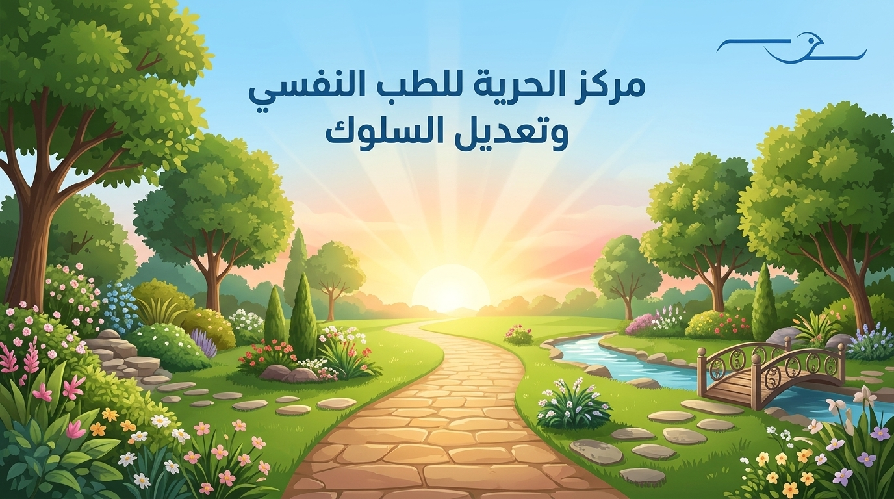
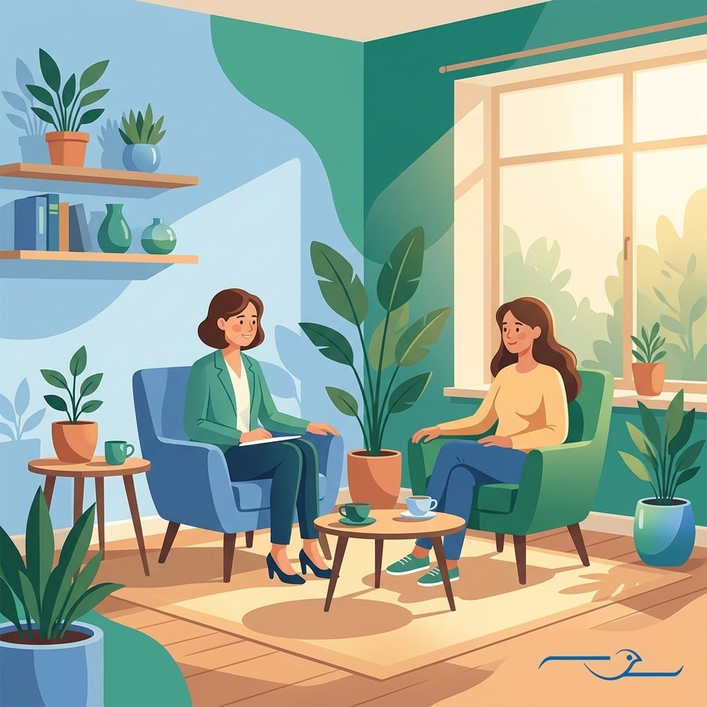

نقدم برامج متخصصة في الطب النفسي، الاستشارات الفردية، وتعديل السلوك في بيئة فندقية هادئة وسط الطبيعة بإشراف نخبة من الأطباء والاستشاريين.

في مركز الحرية للطب النفسي وتعديل السلوك بوادي النطرون، نؤمن بأن التعافي النفسي يبدأ من الشعور بالأمان والاحتواء. نوفر مساحات خضراء واسعة وإقامة فندقية مريحة بعيداً عن ضغوط الحياة اليومية.
يعمل فريقنا الطبي والنفسي على مدار 24 ساعة لتقديم الدعم الفردي والجماعي بسرية مطلقة وخصوصية تامة.

خطط علاجية وتأهيلية متكاملة بإشراف نخبة من الأطباء والاستشاريين
جلسات تقييم وتشخيص دقيقة لحالات القلق، والاكتئاب، والضغوط النفسية لوضع خطة علاجية مخصصة لكل حالة.
جلسات علاج معرفي سلوكي (CBT) تهدف إلى تغيير الأنماط السلبية، بناء مهارات التكيف، واستعادة التوازن.
متابعة مستمرة ودعم نفسي دوري بعد انتهاء البرنامج لضمان الاستقرار والاندماج الإيجابي في المجتمع.